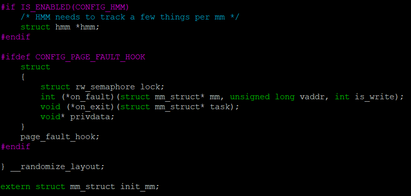
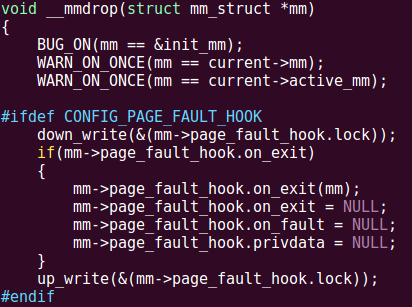
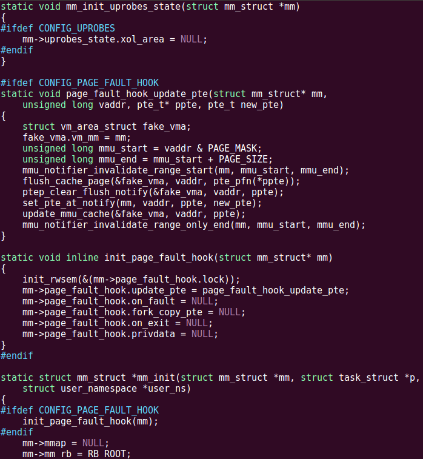

Kernel的修改非常简单，分为四步，下面一步步分解。我使用的kernel版本是4.17.19，不过修改对kernel版本依赖很小。
首先，在include/linux/mm_types.h的第506行附近，即struct mm_struct结构体最后加入如下代码：
#ifdef CONFIG_PAGE_FAULT_HOOK
struct
{
struct rw_semaphore lock;
int (*on_fault)(struct mm_struct* mm, unsigned long vaddr, int is_write);
void (*on_exit)(struct mm_struct* task);
void* privdata;
}
page_fault_hook;
#endif

接着，在kernel/fork.c的第632行附近，即__mmdrop()里面，加入如下代码：
#ifdef CONFIG_PAGE_FAULT_HOOK
down_write(&(mm->page_fault_hook.lock));
if(mm->page_fault_hook.on_exit)
{
mm->page_fault_hook.on_exit(mm);
mm->page_fault_hook.on_exit = NULL;
mm->page_fault_hook.on_fault = NULL;
mm->page_fault_hook.privdata = NULL;
}
up_write(&(mm->page_fault_hook.lock));
#endif

然后，在kernel/fork.c的第1338行附近，即copy_mm()接近尾部的地方，加入如下代码：
#ifdef CONFIG_PAGE_FAULT_HOOK
init_rwsem(&(mm->page_fault_hook.lock));
mm->page_fault_hook.on_fault = NULL;
mm->page_fault_hook.on_exit = NULL;
mm->page_fault_hook.privdata = NULL;
#endif
